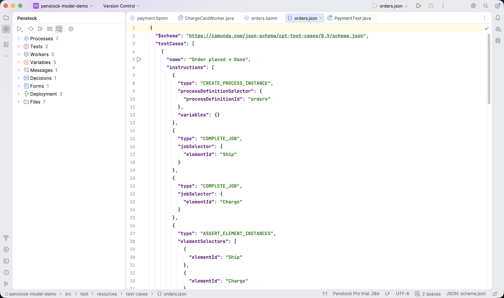

Guide / Project setup
The Penstock tool window
The Penstock tool window shows your project as a model: processes, the workers they need, messages, decisions and forms, not just files.
Open it
- Click Penstock in the tool window bar on the left of the IDE.
- The tree lists your project. Double-click a node to open it. On a diagram element, it selects the element on the canvas.
- Right-click a node for its actions. The menu always starts with Open, and ends with the command-line actions.
- Type to search the tree.
When the project has no diagrams the tree says No diagrams in this project and offers Start from an example. See The example project.

What the tree shows
| Node | What is under it |
|---|---|
| Processes | Every process, with the processes it calls and is called by. With Pro: its tests and how much of it they cover. |
| Tests Pro | Every process test, by class, with what each covers. You can run or debug any of them, a class, or all. |
| Workers | What each task needs to run: a job type, topic, class or bean. Right-click a worker for Go to Implementation and Find Usages in Code. A worker nothing implements is marked. Check Workers on… asks the engine whether anything picks the work up. See Check Workers. |
| Variables | Every process variable, where it is set and read, and a warning for one that is read but never set, or one that is set a letter away: set as 'approved'? |
| Messages | Every message, with who catches and who throws it. |
| Errors | Every error code, where it is caught and where it is thrown. Marks a code that is thrown but never caught, and an error event nothing throws. |
| Decisions | Every decision, and the tasks that call it. A decision the project does not have is marked not in project. |
| Forms | Every form, and the tasks that use it. A form the project does not have is marked not in project. |
| Deployment | Each profile with its address and the last deploy. Right-click a profile and press Deploy to send every diagram to it, after a confirmation. |
| Files | The files, in folders. |
| Debug | Only while the debugger is stopped in a worker. It shows the task the debugger is in. |
| Migrate to Camunda 8 | Only in a Camunda 7 project. See Camunda 7 to 8. |
| Code | Without Pro, a single line that says what Pro adds, and Buy or Sign In…. |
The Workers, Variables, Messages, Errors and code links parts need Pro for the links to your source code. Without Pro, the model of your diagrams is still shown.
The toolbar
| Run Penstock | A menu of command-line actions: Check, Paths, Tests, Code, Docs, Format, Diff Since…, Export… and Doctor. Each runs penstock on the selected file or folder and shows the output in the Run window. It uses the project's penstockw when there is one. It runs only in a trusted project. Paths, Tests, Code and Docs need Pro. |
| Reload from Disk | Re-reads the project from disk. The tree also refreshes by itself when a file changes. |
| Run All Process Tests | Runs every process test. Shown when process tests exist. Pro. |
| Group by Files | Turns the tree round: file by file, with each process's elements and what runs them. |
| Show Folders | Switches between a tree of folders and a flat list. |
| Open penstock.yaml | Opens the project's configuration, or creates it when there is none. |
Whether the view is grouped by files, and whether it shows folders, are kept in ~/.penstock/preferences.json.
Right-click actions
- Open opens the file, or selects the element.
- Copy ID copies the process id, decision id, job type or other name to the clipboard.
- Find Usages in Code lists the code that names it. Pro.
- Go to Implementation opens the method or class that runs a worker. Pro.
- Run Tests and Debug Tests. Pro.
- Deploy sends a file or a process to its profile.
Common problems
- The tree is empty.
- The project has no
.bpmn,.dmnor.formfiles that Penstock can see. Build folders such asnode_modules,build,target,outanddistare skipped. Press Reload from Disk. - The Run Penstock actions do nothing, or an error says the project is not trusted.
- Trust the project. The command line runs code from your project's
node_modulesand hooks, so it needs trust. - The first command is slow.
- Without a
penstockwin the project, Penstock runsnpx @penstock/cliand downloads the command line the first time.penstock initadds the wrapper, which pins a version. - There is no Go to Implementation.
- Code links are a Pro feature, and nothing in the project implements this worker.